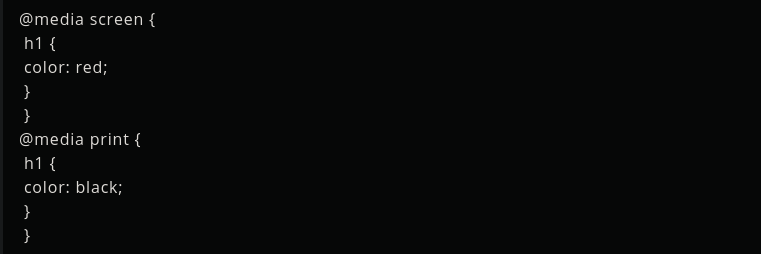
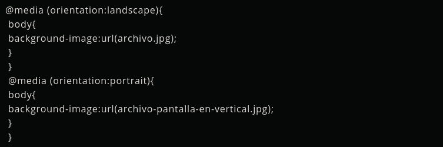
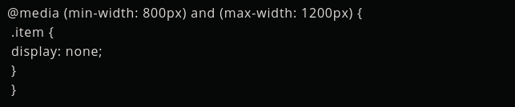

Sitios Responsive con Media Queries
Es una de las grandes ventajas de CSS3 el cual es capaz de identificar qué sistema se está visualizando en una página web. Cuenta con una función para aplicar unas reglas de estilo u otras. Es un CSS personalizado que se acopla a las condiciones del navegador o dispositivo que nos visita. se convierte en uno de los mejores recursos con los que cuentan los diseñadores para hacer sitios responsive.
Es una de las grandes ventajas de CSS3 el cual es capaz de identificar qué sistema se está visualizando en una página web. Cuenta con una función para aplicar unas reglas de estilo u otras. Es un CSS personalizado que se acopla a las condiciones del navegador o dispositivo que nos visita. se convierte en uno de los mejores recursos con los que cuentan los diseñadores para hacer sitios responsive.Para utilizar las Media Queries de CSS3 es muy sencillo, se utiliza de manera descriptiva indicando una condición y los estilos que deben aplicarse cuando ésta se cumpla.Es aplicado en todos los navegadores. Solo en versiones muy antiguas de Internet Explorer tendrán problemas con ellas especificamente en IE8 para abajo.
Medios
Con Media Queries podemos detectar el medio donde se está consumiendo un sitio web.
El codigo anterior permite distingir el modo en el que se está consumiendo la página, en una pantalla o en la impresora.
Tamaños de pantalla
Es uno de los mas usados para las Media Queries que permite detectar las dimensiones de la pantalla.

En el codigo anterior se aplica una serie de estilos, que se tendrán en cuenta solamente cuando la anchura de la pantalla sea de 1000px en adelante.
Orientación
También es útil que en los sitios que cuentan con Media Queries definir estilos en función de la orientación, lo que resulta especialmente adecuado en el diseño para móviles.
Combinar condiciones
En el aspecto audiovisual y maquetacion web es importante el distinguir el tipo de cliente que visita el sitip web, como la profundidad del color, densidad de píxeles, resolución, entre otros aspectos. No todos estos aspectos estan disponibles en todos los navegadores , es importante el diseñar y programar en los más utilizados para el sitio web.
Ademas de contar como aplicar estilos únicamente para pantallas con ciertas dimensiones, o para ciertas dimensiones en dispositivo de manera vertical y horizontal , en impresoras de determinada resolución.
En el codigo anterior se implementa una regla en que se aplicaría en cualquier medio con dimensiones entre 800 y 1200 píxeles.